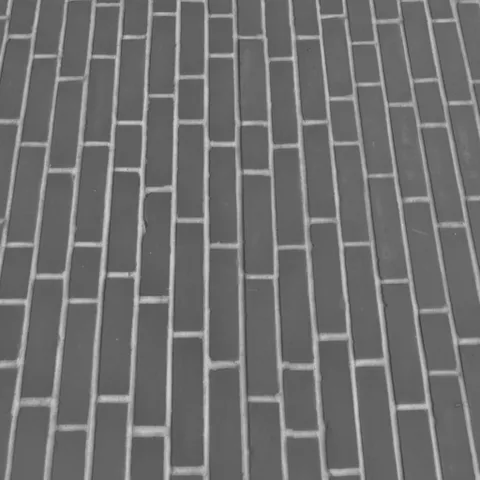
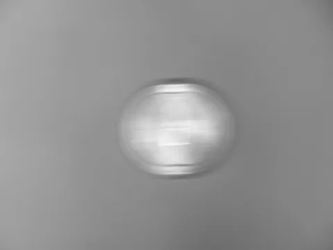
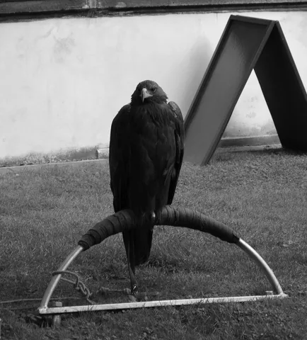
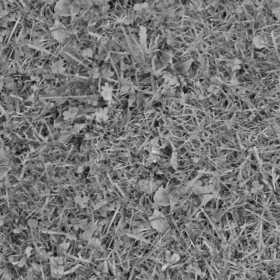
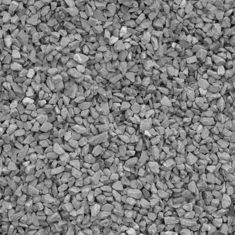
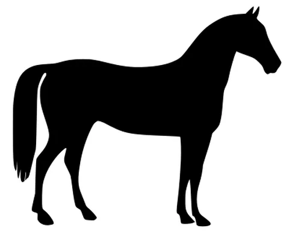
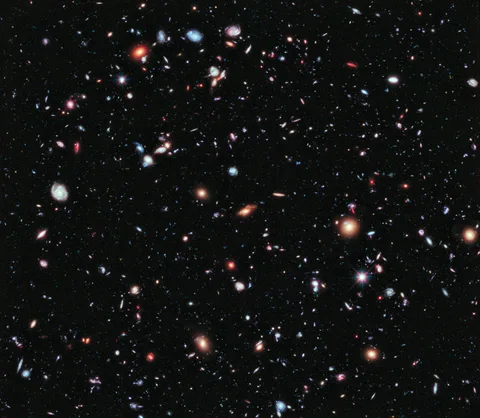

你的資料夾，你的圖片。Pixora

不必看說明書，
捲動看一次。
重演 v0.3.7 的一次真實操作：找到、選取、確認、搬移、復原。示範資料僅存於此頁，不會讀取或搬動你的檔案。
Pixora · 互動重演
示範資料僅存於此頁，不讀取或搬動你的檔案
你的資料夾，
原封不動。
開啟既有圖庫就開始瀏覽。標籤、收藏與星等只記錄分類，不改變檔案位置。
下面是示範圖庫：12 張來自 CC0 與公有領域的圖片。- astronaut.png

brick.png- camera.png
- chelsea.png

clock_motion.png- coffee.png

eagle.png
grass.png
gravel.png
horse.png
hubble_deep_field.jpg- rocket.jpg
記得畫面，
就有找回的線索。
輸入英文描述搜尋已完成分析的圖片，也能從一張圖片出發尋找相似畫面。
試試看：a photograph of a cat
- astronaut.png
- brick.png
- camera.png
- chelsea.png最佳結果
- clock_motion.png
- coffee.png
- eagle.png
- grass.png
- gravel.png
- horse.png
- hubble_deep_field.jpg
- rocket.jpg
你決定，
什麼去哪裡。
點選要一起整理的圖片，命名分類並確認。確認只是記下決定，還不會搬動檔案。
跟著真實示範：選取astronaut.png 與 rocket.jpg
- astronaut.png
- brick.png
- camera.png
- chelsea.png
- clock_motion.png
- coffee.png
- eagle.png
- grass.png
- gravel.png
- horse.png
- hubble_deep_field.jpg
- rocket.jpg
已選 0 張
整理到 → 太空探索/（在目前資料夾新增）
先看清單，
再套用。
逐檔列出來源與目的地，核對無誤才執行。只加標籤時也會先預覽。
真實示範中，操作者核對了 2 個檔案後才套用。- astronaut.png太空探索/astronaut.png
- rocket.jpg太空探索/rocket.jpg
將搬移 2 張 · 其餘 10 張維持原處 · 確認後才會執行
套用，
也能回頭。
套用後圖片移入指定資料夾；從操作紀錄可以復原本次搬移，紀錄跨重啟保存。
真實示範中，共搬移並復原 2 個檔案。- astronaut.png
- rocket.jpg
2太空探索/
操作紀錄 · 已復原：0 個檔案回到原位置
從圖庫開始。繼續往下捲動，或點上方步驟。
不是動畫，
是真的。
互動重演的每個畫面，都拍攝自 v0.3.7 的一次真實操作。


閱讀操作步驟
- 00:00 從畫面找圖。圖片已完成分析，輸入
a photograph of a cat，瀏覽本機語意搜尋結果。 - 00:19 人工確認分類。選取太空人與火箭，確認為「太空探索」；其餘圖片保留待判斷。
- 00:33 看清楚再套用。逐檔核對來源與目的地，這次只整理已確認的 2 張圖片。
- 00:41 搬移，也能復原。套用後圖片移到指定資料夾，再從操作紀錄復原到原位置。重要原圖仍請另外備份。
下一次找圖，
不用再從頭翻起。
先選一個已備份的資料夾，讓 Pixora 陪你理出頭緒。
Windows x64 · 安裝版與免安裝版 · 畫面示範為 v0.3.7，下載前往最新發行版